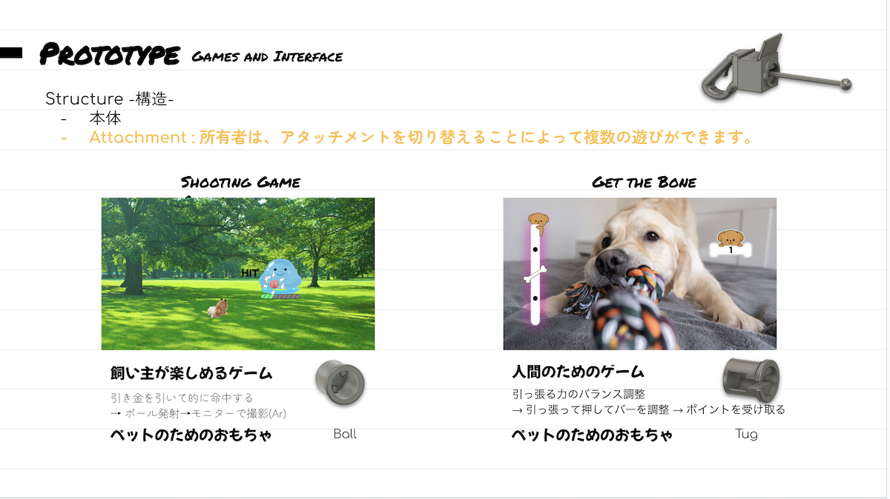
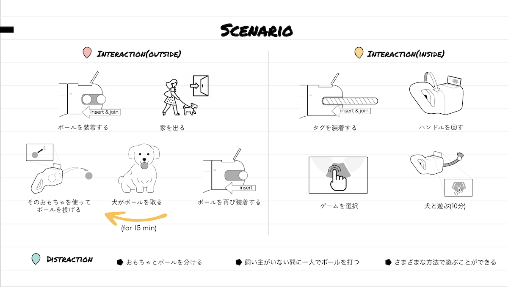
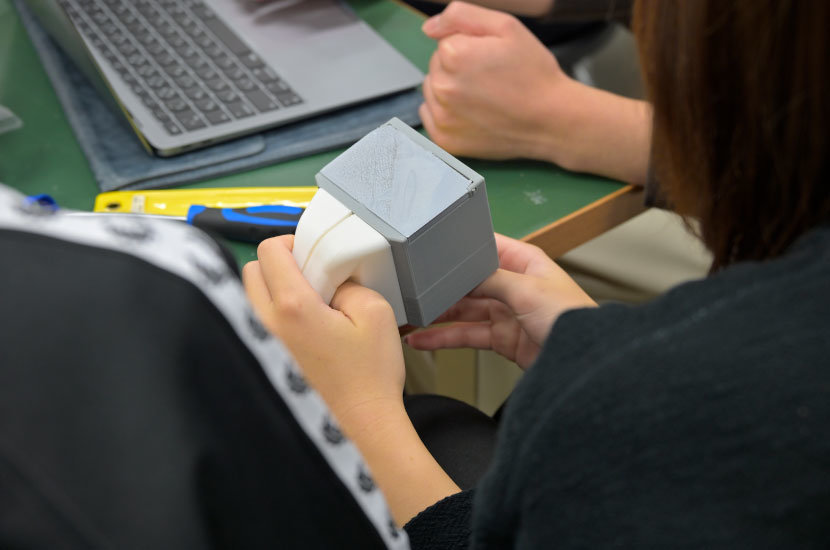

成均館大学（韓国）との共同開発
「Joiny」

日本と韓国、両国ともペット市場の規模は拡大している。しかし、各国でペットに対する考えや行動が異なる。両国のペットの特徴から、互いのニーズを満たしたペットトイを製作する。
| ジャンル | 商品開発 |
|---|---|
| 制作人数 | 6人 |
| 担当 | 企画・CGモデル・プロトタイプ製作 |
| 使用技術 | fusion360(CGソフト)・Office |

研究室の活動の一環で韓国の成均館大学と共同チームとなり、ペットのおもちゃの開発を行いました。
日本は飼い主と共におもちゃで遊ぶことに癒しや幸せを感じ、韓国は愛犬が楽しむためにおもちゃで遊ぶが、飼い主側が退屈や義務のようなものを感じる時があるようでした。
そこで、飼い主も愛犬も両方楽しめ、飼い主がいないときでも遊ぶことのできるパーツ交換式のデバイスを考えました。